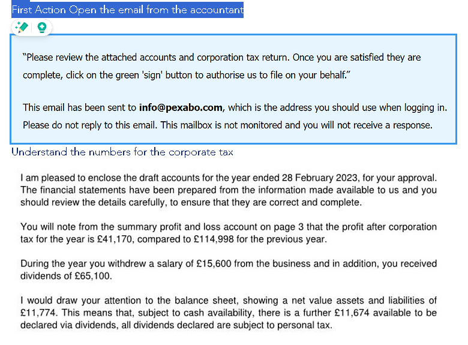
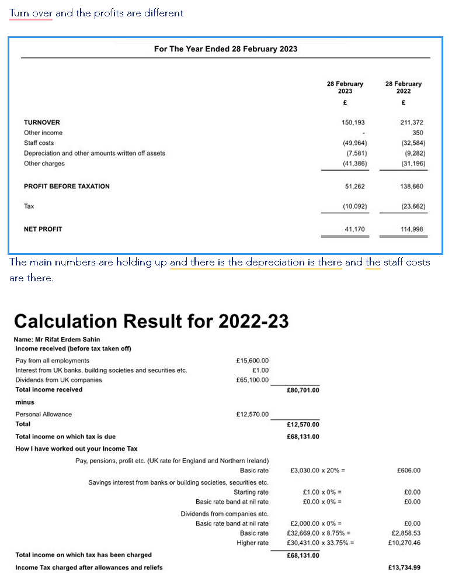

Small Business Tax Strategies: Staying Ahead of the Game
Small Business Tax Strategies: Staying Ahead of the Game
For small business owners, tax season can stir a mix of anticipation and apprehension. Receiving the financial report card from your accountant marks a critical moment, unveiling the health of your business in stark numbers. It's the time when you learn not just how your business has performed, but also how much you owe the government—a revelation that can be particularly daunting in trying times such as a pandemic.
The challenge is accentuated for small businesses due to the phenomenon of double taxation, where you're taxed on both salaries and dividends. And when cash flow is tight, the pressure of a looming tax bill can seem insurmountable, especially if personal assets are not a viable option to cover the shortfall.
Navigate With Knowledge and Preparation
The key to managing your taxes effectively as a small business owner lies in preparation and understanding. Knowledge is power, and in the financial realm, it's also the best defense against the tax man's bite. Here’s how you can approach tax season strategically:
Step 1: Open the Lines of Communication
Your accountant's email with your "report card" isn't just a bill—it's a detailed map of where your money has gone, and a forecast of what's to come. Open it. Read it. Understand it. This document contains valuable insights that can help you plan for the future.
Step 2: Understand Your Tax Burden
Dive into the numbers. Grasping the details of your tax obligations is crucial. Double taxation can be a thorny issue, but understanding how it applies to you can reveal avenues for potential tax relief or smarter money management strategies.
Step 3: Explore Tax Planning Strategies
Tax planning is an ongoing process, not just an end-of-year scramble. Consider strategies such as:
-
Timing: Adjust the timing of expenses and income to fall into different tax periods, potentially lowering your taxable income when it's most advantageous.
-
Legal Structures: Review your business structure (LLC, S Corporation, etc.) with a tax advisor to ensure you're using the most tax-efficient model.
-
Retirement Plans: Establish a retirement plan that benefits both you and your employees while reducing your taxable income.
Step 4: Consult With Your Accountant
Your accountant is more than a number cruncher; they are a vital advisor for your business. Engage with them regularly, not just at tax time. Ask them about:
-
Tax Credits and Deductions: What new tax credits or deductions can you leverage?
-
Growth Strategies: How can you align business growth plans with tax efficiency?
-
Cash Flow Management: Can you restructure your cash flow to better handle tax liabilities?
Step 5: Regular Financial Reviews
Make financial review a routine part of your business strategy. By regularly examining your financials, you can make more informed decisions about investments, expenses, and revenue strategies that affect your tax liabilities.
Step 6: Keep an Emergency Fund
An emergency fund isn't just for personal finance. Businesses too need a buffer to handle unexpected tax bills without resorting to disruptive financial gymnastics like moving money around as dividends.
Conclusion
Understanding the intricacies of your small business finances and planning ahead are the cornerstones of effective tax management. Remember, paying taxes is an unavoidable aspect of business ownership, but with informed strategies and proactive planning, it doesn't have to be a source of stress. Approach tax season as an opportunity to fine-tune your business strategy, and you can transform the tax man from foe to friend. Open that email from your accountant, arm yourself with knowledge, and take control of your financial future.


Imported from rifaterdemsahin.com · 2024